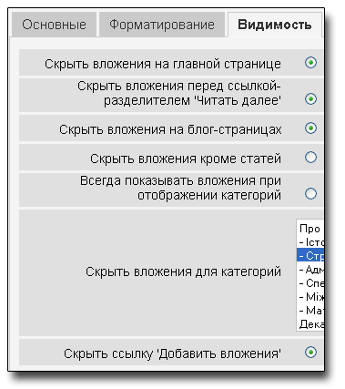
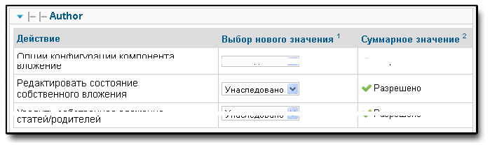
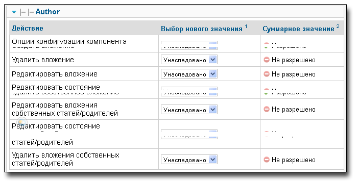

Версия 3.0.1 - Сентябрь 2011
Данная версия совместима с Joomla 1.6/1.7+
Содержание
Расширение ВЛОЖЕНИЯ (Attachments) для CMS Joomla! позволяет загружать файлы на сайт и присоединять (attach)
их к статье или другому родителю. ВЛОЖЕНИЯ включает в себя
плагин для отображения вложений, компонент для загрузки и управления
вложениями и другие плагины. Наряду с различными опциями, увеличивающими гибкость и удобство использования,
в расширении присутствуют опции контроля того, кто может видеть вложения и
кто может их загружать.
Замечание: все опции доступны через админ-панель 'Компоненты > Вложения > Настройки'.
Предупреждение
Эта версия расширения ВЛОЖЕНИЯ работает только под управлением Joomla! 1.6, 1.7 и выше.
Замечание
Далее в документе будет использоваться термин элемент контента. Обычно под этим подразумевается вложение файлов к статьям. Компонент ВЛОЖЕНИЯ по умолчанию поддерживает вложение файлов и ссылок к статьям или категориям. Однако существует возможность вложить файлы в другие типы контента (необходимы соответствующие плагины для ВЛОЖЕНИЯ). Все типы контента, в которые выполняются вложения, будем называть элементы контента.
Расширение ВЛОЖЕНИЯ переведено на многие языки. См. раздел Переводы чтобы увидеть список доступных переводов. Многие из языковых пакетов находятся в процессе обновления до версии 3.0.
Если вы хотите подписаться на рассылку обновлений этого расширения, пожалуйста воспользуйтесь страницей:
Возможность управления вложениями в режиме редактирования статьи, включая добавление, редактирование и удаление вложений
Возможность создания вложений в процессе создания статьи.
Все списки вложений на сайте обновляются при помощи AJAX, что не требует полной перезагрузки страницы.
Возможность "присоединять" ссылки, так же как и файлы, к элементам контента.
Возможность отображать список вложений в любом месте статьи (или элемента контента).
Расширение ВЛОЖЕНИЯ (Attachments) поддерживает "Плагины для ВЛОЖЕНИЯ". Дополнительные плагины позволяют присоединять файлы к любым элементам контента, которые используют плагин onPrepareContent. Например, возможно вложить файлы в описания категорий. Затратив немного времени разработчик может создать новый плагин для ВЛОЖЕНИЯ, позволяющий добавлять вложения к контенту типа: персональная информация в Community Builder, описания товаров в Virtuemart, и т.д. Более детально см. в разделе Как можно вложить файлы?.
Не все типы файлов могут быть загружены. Расширение ВЛОЖЕНИЯ не разрешит загрузить файлы, которые запрещены в Joomla! Медиа Менеджере. Чтобы посмотреть (изменить) какие типы файлов разрешены - войдите на страницу Материалы > Медиа-менеджер. Выберите кнопку Настройки на тулбаре и затем вкладку Компонент. Здесь указано какие типы файлов и какие MIME типы разрешены для загрузки. Расширение ВЛОЖЕНИЯ соблюдает эти ограничения. Однако запрет на 'Разрешённые расширения изображений' игнорируется. Добавьте необходимые расширения файлов в поле "Разрешённые расширения". Вожможно также добавить необходимые MIME типы в поле "Разрешённые типы файлов (MIME)".
Предупреждение
При добавлении значений в поля "Разрешённые расширения" или "Разрешённые типы файлов (MIME)" наличие пробелов недопустимо!
Все настройки расширения ВЛОЖЕНИЯ управляются через менеджер компонент. Чтобы изменить настройки откройте админ панель, выберите пункт меню "Компоненты" > "Вложения". Нажмите кнопку "Настройки" справа вверху на панели управления и увидите параметры расширения, сгруппированные по закладкам.
Вложения опубликованы по умолчанию: Данный режим автоматической публикации устанавливает будут ли опубликованы по умолчанию вновь добавленные вложения. При установке 'Да' при добавлении вложения оно будет опубликовано немедленно и будет видимо пользователям. При установке 'Нет' новые вложения не будут опубликованы автоматически. Для публикации вложения администратор или пользователь с необходимым доступом должен опубликовать вложение через админ панель, чтобы вложение стало доступно на сайте.
Предупреждение о публикации: Если режим автоматической публикации (см. предыдущий пункт) выключен, возможно вы захотите проинформировать пользователей, добавляющих вложения, как им опубликовать свои вложения. Здесь вы можете вставить соответствующий текст. Если поле оставить пустым, будет отображаться стандартное системное сообщение предлагающее пользователю связаться с администратором для того что бы его новое вложение было опубликовано.
Уровень доступа по умолчанию: Уровень доступа по умолчанию для новых вложений. Каждое вложение имеет уровень доступа, который определяет кто может видеть или скачивать вложение. При создании вложения ему устанавливается уровень доступа по умолчанию (в случае, если автор принадлежит соотвествующим группам). Администратор сайта или пользователь с соответстующим доступом могут изменять установленные уровни доступа вложений для определения, кто может видеть определенные вложения.
Имя поле 1-3: В случае необходимости добавить дополнительную информацию о вложении компонент ВЛОЖЕНИЯ позволяет определить до 3-х дополнительных полей. Чтобы создать новое дополнительное поле введите его имя в одну из трех областей ввода. Очистите область ввода имени чтобы отключить редактирование и отображение этого поля. Поля, определенные пользователем, будут отображаться в том же порядке, что и здесь. Максимальная длина имени каждого поля ограничена 40 символами. Длина данных в каждом пользовательском поле не должна превышать 100 символов.
Максимальная длина каждого имени поля 40 символов. Длина данных в этих полях до 255 символов.Совет
Добавление знака '*' в конце имени поля приводит к скрытию поля на сайте. Имя будет отображаться только в режиме редактирования вложения на сайте и всегда в админ панели. Данная возможность позволяет сортировать вложения в необходимом порядке путем помещения в это поле целых чисел.
Максимальная длина имени файла или ссылки: Максимальная длина имени файла или ссылки в списке вложения. Имена файла или ссылки длиннее установленного ограничения будут усечены и помещены в колонку "Display Filename / URL" (только для отображения, реальное имя файла или ссылка останутся без изменения). Значение 0 означает отсутствие ограничений на длину за исключением ограничения бызы данных, которое состовляет 80 символов. Примечание: эта опция воздействует только на имена вложений, добавленных после установки этой опции.
Куда поместить вложения: Данная опция управляет расположением вложения в определенном месте элемента контента. Имеются следующие режимы:
'В начале'
'В конце'
'Пользовательское расположение' - в данном режиме список вложений будет расположен в месте элемента контента, где будет помещен тег: {attachments}.
Предупреждение
В пользовательском режиме для любого элемента контента, в котором нет необходимого тега, список вложений будет размещен в его конце.
При редактировании в админ панели будет отображаться дополнительная кнопка: [Признак вложения {attachments}]. Выберите позицию, где вы хотите разместить признак вложения и используйте эту кнопку для вставки признака. Данная функция добавляет дополнительный HTML код для скрытия самого признака вложения в случае, когда он не замещен вложением (например случай, когда вложение не должно отображаться пользователю). HTML код, добавляемый вокруг признака, имеет следующий вид:
<span class="hide">{attachments}</span>При редактировании в админ панели в тексте будет отображаться тег {attachments} а не HTML код 'span' за исключением отображения HTML кода. На сайте вы никогда не увидите тег {attachments} за исключением случая, когда плагин insert_attachments_tag выключен. Для удаления признака вложения {attachments} необходимо использовать режим отображения "HTML" кода чтобы вместе с признаком вложения удалить и окружающий его HTML код.
Предупреждение
Режим 'Пользовательское расположение' не работает для вложений в описания категорий.
'Неактивный (фильтр)' - данный режим запрещает отображение списка вложений и подавляет отображение любого тега {attachments}, расположенного в элементе контента.
'Неактивный (без фильтра)' - данный режим запрещает отображение списка вложений и НЕ подавляет отображение любого тега {attachments}, расположенного в элементе контента.
Доступно редактирование с фронта для уровня доступа: Позволяет установить уровень доступа с фронта ко вложению при его создании или редактировании. 'Уровень доступа' устанавливает какие группы могут видеть (редактировать) вложение. ВАЖНО: вложение невозможно редактировать пока для него не будет установлен соответстующий уровень доступа.
Показать заголовки: Установка 'Да' добавляет строку над списком файлов вложения, описывающую содержания колонок.
Показать описание вложения: Определяется будет ли показано описание для каждого вложения в списке.
Показать автора вложения: Показать логин пользователя, создавшего (загрузившего) вложение.
Показать размер файла вложения: Определяется будет ли показан размер каждого файла вложения в списке.
Показать количество скачиваний: Показать количество скачиваний в списке вложений.
Предупреждение
ВНИМАНИЕ: Эта опция работает только при ограниченном доступе! В обычном режиме файлы вложений обрабатываются как статические файлы и доступ к ним осуществляется напрямую без прохождения через код Joomla! Поэтому невозможно подсчитать количество скачиваний файла. Таким образом эта опция будет работать только если уставлено значение 'Да' здесь и включен режим 'Ограниченный доступ скачивания'.
Показать дату изменения файла: Если опция установлена 'Да', тогда в списке вложений появится дата модификации каждого файла. Если 'Нет', дата модификации не будет отображена.
Формат представления даты: Вы можете указать формат отображения времени модификации используя тот же формат, что и в функции PHP strftime(). Примеры можно найти в интернете по запросу 'PHP strftime'. По умолчанию формат установлен (%x %H:%M), что дает 24 часовой формат вида: 4/28/2008 14:21. Для удаления времени удалите символы "%H:%M". Учтите что реализации PHP под Windows и Linux системами могут отличаться.
Порядок файлов вложения: Опция позволять выбрать порядок расположения файлов в списке вложения. Большинство опций очевидны:
Опции управляют отображением вложений на сайте, при условии что пользователь принадлежит группе, для которой вложения видимы.
Для выделения/отмены отдельных категорий удерживайте клавишу Control при выделении категории мышью. На рисунке выделена только одна категория.
Символы, запрещенные к загрузке: Имена файлов, содержащие указанные символы, запрещены к загрузке. Т.к. эти символы имеют проблемы при отображении имен файлов вложений в обычном режиме, то они запрещены к использованию. Обычно с этими символами не возникает проблем в режиме ограниченного доступа до тех пор, пока имя файла не используется как часть ссылки.
CSS стиль для таблицы вложений: Для замены CSS стиля таблицы вложений введите имя стиля. Стиль по умолчанию 'attachmentsList'. См. файл attachments.css file. Более детально см. в разделе CSS стили списка вложений.
Режим открытия ссылки: Определяется как открывается ссылка на файл. 'В том же окне' означает что ссылка будет открыта в том же окне браузера. 'В новом окне' - ссылка будет открыта в новом окне (закладке).
Заголовок пользователя для списка вложений: По умолчанию расширение ВЛОЖЕНИЯ (Attachments) вставляет заголовок 'Вложения' над списком вложений для каждой статьи или элемента контента (который имеет вложение). Иногда необходимо использовать другой заголовок для определенных статей или элементов контента. Для переименования заголовока для определенной статьи необходимо использовать следующий формат. Например, если для статьи 211 (ID) необходим новый заголовок "Новый заголовок:", необходимо в поле добавить строку '211 Новый заголовок' (без кавычек). Одна строка -- один заголовок. Для других типов контента используется формат: 'category:23 Заголовок для категории 23'. Например для статьи, упомянутой выше, должна быть строка вида 'article:211 Новый заголовок'. Возможен пропуск ID для изменения заголовка по умолчанию для всех вложений всех статей. Хорошей практикой является вначале глобальное изменение общего заголовка в первой линии и затем изменение необходимых заголовков.
Примечание: для изменения глобального заголовка возможно отредактировать файл перевода. Вхождение 'ATTACHMENTS TITLE' находится в файле перевода:
administrator/language/qq-QQ/qq-QQ.plg_frontend_attachments.ini
где qq-QQ является инфобозначением кода языка, например en-GB для английского или ru-RU для русского языка. (Если вы не знакомы с файлами перевода Joomla!, то просто найдите строку, содержащую 'ATTACHMENTS TITLE' в левой части перед знаком '=', напишите то что вы считаете нужным для отображения в правой части после знака '=' и ничего не меняйте в левой).
Время ожидания ответа: Время ожидания ответа при проверке ссылки (секунд). В случае добавления ссылки как вложения она проверяется (возможно отключение проверки в форме). Если доступ по ссылке получен ранее установленного времени ожидания, определяются размер файла и другая информация о ссылке, если нет, используется общая информация. Установить 0 для отключения функции.
Совмещение иконок ссылки и файла: Совмещение иконки ссылки и иконки файла вложения чтобы отобразить ссылку. Корректные ссылки отображаются со стрелкой, некорректные - перечеркнуты красной линией (от низ-слева до верх-справа).
Удаление устаревших вложений (админ панель): Установка по умолчанию для удаления устаревших вложений из админ панели. В данном случае устаревшими считаются вложения к элементам контента в состояниях "Не опубликовано", "В корзине". Возможно переопределить эту установку выбрав 'Показать вложения для' из выпадающего меню справа над списком вложений (в одной строке с фильтром). Выбранная опция отображения вложений будет сохранена до тех пор, пока администратор не выйдет из админ панели. Поэтому изменение этого параметра может не подействовать сразу. Данная установка вступит в силу при последующем входе как администратор.
Ограниченный доступ: По умолчанию расширение ВЛОЖЕНИЯ (Attachments) сохраняет файлы вложений в общедоступном каталоге. При ограниченном доступе каталог, в котором будут сохраняться вложения, не является общедоступным. Ссылки на скачивание вложений с сайта позволяют скачивать вложения, однако это не прямые ссылки. Это предотвращает доступ пользователей, не имеющих достаточных прав. Если ограниченный доступ не выбран, ссылки к вложениям отображаются так, как они введены. Как результат, вложения доступны любому посетителю сайта, который знает полную ссылку на вложение, т.к. вложения находятся в общедоступном каталоге. Ограниченный доступ предотвращает доступ пользователям, не имеющим достаточных прав, даже если известна полная ссылка, т.к. нет доступа в каталог вложений. В режиме ограниченного доступа опция "Who can see" возможно установить в значение 'Все', что позволит всем пользователям видеть и скачивать вложения.
Совет
Если существуют проблемы с именами файлов в Unicode кодировке, возможно выбрать опцию 'Да' для Ограниченный доступ (особенно на Windows серверах).
Режим ограниченного доступа: Позволяет скачивать вложения как отдельные файлы или отображать их в браузере (если браузер поддерживает такой тип файла). Существуют следующие опции:
- 'inline' - в данном режиме все файлы, которые возможно, будут отображены в браузере (как текстовые или файлы изображений).
- 'Вложение' - в данном режиме (по умолчанию) файлы можно скачивать как отдельные файлы.
В любом случае файлы, не отображаемые в браузере, могут быть скачаны как внешние файлы.
Опции по разделению прав будут рассмотрены в следующем разделе Разрешения на вложения.
Расширение ВЛОЖЕНИЯ (Attachments) использует все преимущества новой системы разрешений (ACL), которая внедрена в Joomla! 1.6. Это позволяет настраивать использование вложений на сайте более точно. Возможна отдельная настройка, кто может создавать, редактировать и удалять вложения, а также управление вложениями.
Перед описанием системы разрешений (ACL), используемой во ВЛОЖЕНИИ, важно понимать несколько принципов:
ВАЖНО
Все вложения, присоединяются к родительской статье, категории или другому элементу контента. Создание, редактирование, удаление или изменение состояния вложения выполняется через форму редактирования родительского элемента контента. Следовательно, пользователь должен иметь права на редактирование родительского элемента контента для возможности настройки соответствующего вложения.
Для изменения прав доступа различных групп пользователей необходимо войти в админ панель и выбрать пункт "Вложения" в меню "Компоненты". Нажать кнопку "Настройки" на тулбаре (правый верхний угол) и выбрать закладку 'Права'. Представлены следующие пункты:
Опции прав доступа к вложениям. Показаны права доступа для общей (Public) группы пользователей.
Краткое описание прав доступа, связанных с доступом ко вложениям:
| Разрешение | Описание / Замечания | ACL действие |
|---|---|---|
| Настройка ВЛОЖЕНИЯ | Возможно изменять общие настройки ВЛОЖЕНИЯ. | core.admin |
| Доступ к ВЛОЖЕНИЯ | Возможен доступ к расширению ВЛОЖЕНИЯ в админ панели | core.manage |
| Создавать вложения | Можно создавать вложения (если возможно редактировать родитель). | core.create |
| Удалять вложения | Можно удалять любые вложения (если возможно редактировать родитель). | core.delete |
| Редактировать вложения | Можно редактировать любые вложения (если возможно редактировать родитель). | core.edit |
| Редактировать состояние вложения | Можно изменять состояние любого вложения (если возможно редактировать родитель). | core.edit.state |
| Редактировать вложения автора | Можно изменять только собственные вложения (если возможно редактировать родитель). | core.edit.own |
| Редактировать состояние вложения автора | Можно изменять состояние только собственных вложений (если возможно редактировать родитель). | attachments.edit.state.own |
| Удалять вложения автора | Можно удалять только собственные вложения (если возможно редактировать родитель). | attachments.delete.own |
| Редактировать вложения к статьям/родителям автора | Можно редактировать любое вложение к собственным статьям/родителям (если возможно редактировать родитель). | attachments.edit.ownparent |
| Редактировать состояние вложения к статьям/родителям автора | Можно редактировать состояние любого вложения к собственным статьям/родителям (если возможно редактировать родитель). | attachments.edit.state.ownparent |
| Удалять вложения к статьям/родителям автора | Можно удалять любое вложение к собственным статьям/родителям (если возможно редактировать родитель). | attachments.delete.ownparent |
Сразу после установки расширения ВЛОЖЕНИЯ установлены следующие права:
Если необходимы другие умолчания, необходимо изменить соответствующие права доступа при помощи закладки "Права" кнопка "Настройки".
Далее приведено несколько предложений по установке прав доступа для достижения необходимого результата:
Сценарий 1 - Авторы могут публиковать собственные вложения
На закладке ПРАВА выбрать вхождение 'Author'. Выбрать пункт 'Редактировать состояние собственного вложения', установить 'Разрешено' и нажать 'Сохранить' для проверки изменений.
Сценарий 2 - Авторы могут редактировать/удалять только собственные вложения
На закладке ПРАВА выбрать вхождение 'Author'. Выбрать пункты 'Редактировать состояние вложений собственных статей/родителей' и 'Удалить вложения собственных статей/родителей' и установить 'Запрещено' для обоих. Нажать 'Сохранить' для проверки изменений
После изменения прав доступа Author все еще имеет права доступа на редактирование/удаление собственных вложений но уже не может редактировать/удалять вложения других авторов, даже если есть права на редактирование статьи.
Отметим, что все пользователи групп, находящихся выше Author (т.е., Editor, Publisher, и т.д.) также не смогут редактировать или удалять вложения к статьям/родителям, авторами которых они не являются (на основании установленного права доступа). Однако, т.к. они имеют более высокие уровни доступа 'Редактировать вложение' и 'Удалить вложение', то они могут редактировать или удалять любые вложения к любым статьям, которые они могут редактировать (в предположении что остальные их правa доступа остались без изменения).
Если вы используете какие-либо другие сценарии и вы можете их описать, пожалуйста свяжитесь с разработчиком и они будут включены в эту документацию (контакты см. в конце документа).
- Если пользователь имеет права на редактирование состояния своих вложений, то их можно увидеть даже при установе опции 'Опубликовано: Yes/No' на форме добавления/редактировани вложений в положение 'No'. После сохранении вложения, вложения все еще будут видимы пользователю на сайте (пока он не покинул сайт (log out)). Никто больше не может видеть неопубликованные вложения на сайте. Если пользователь изменил состояние 'Опубликовано: Yes/No' на 'No', то все еше существует возможность редактировать вложение (даже если оно серым цветом) и изменять его состояния.
Расширение ВЛОЖЕНИЯ (Attachments) теперь поддерживает 'Уровни доступа' Joomla. Каждому вложению может быть назначен определенный уровень доступа, такой как 'Public', 'Registered', и 'Special', а таже любые другие уровни доступа, созданные на сайте. Существует два базовых уровня:
- 'Public' - Любой посетитель сайта может видеть и скачивать вложения с установленным уровнем доступа в 'Public' если статья/родитель отображается и нет других настроек ВЛОЖЕНИЯ, ограничивающих отображение вложения.
- 'Registered' - Любой пользователь, залогинившийся на сайте, может видеть и скачивать вложения с установленным уровнем доступа 'Registered' если статья/родитель отображается и нет других настроек ВЛОЖЕНИЯ, ограничивающих отображение вложения.
Возможности, предоставляемые другими уровнями доступа, зависят от групп пользователей, асоциированных с этими уровнями.
Возможность установки уровня доступа для отдельных вложений дает полный контроль над тем, кто может видеть и скачивать вложения.
Замечание
Предположим на сайте был создан новый уровень доступа. Пользователи не являются членами групп, которые связаны с новым уровнем доступа, и следовательно, не могут установить соответствующий уровень доступа для своих вложений. Если вы отредактируете вложение как Super User, вы можете столкнуться с тем, что новый уровень доступа не отображается среди предлагаемых уровней доступа. Существует два возможных пути решения. (1) Если вы только сейчас создали новый уровень доступа, вам необходимо покинуть админ панель (log out) и опять войти чтобы изменения вошли в силу . (2) Другая причина это то, что пользователь (Super User например) не имеет необходимого уровня доступа. Решение простое, проверить чтобы пользователь принадлежал одной из групп, связанных с новым уровнем доступа.
Обычно, когда файлы загружены (или ссылки добавлены) и отображаются в списке вложений, полное имя файла (или ссылка) используется как ссылка для скачивания вложения. В некоторых случаях имена файлов (или ссылок) могут быть слишком длинными. В форме загрузки файла есть специальное поле "Показать имя файла/ссылку" в котором возможно указать имя файла (ссылки) или метку, которые будут отображаться вместо полного имени файла (или ссылки). Например здесь может быть указана аббревиатура имени файла. Это поле может быть изменено через админ панель при редактировании вложения. Замечание: Среди опций разширения опция "Максимальная длина имени файла или ссылки". Она может автоматически обрезать имя файла и записывать его в поле "Показать имя файла/ссылку:".
Кроме файлов ВЛОЖЕНИЯ (Attachments) 3.0 имеет возможность "присоединять" ссылки к элементам контента. При открытии формы "Добавить вложение" можно увидеть кнопку "Введите ссылку вместо". Нажатие на нее позволит вам перейти в режим ввода ссылки с двумя опциями:
(определение соответствующей иконки), запрашивается информация о файле с сервера - тип файла и его размер. Иногда сервер не отвечает на запросы даже при указании правильной ссылки. По умолчанию расширение ВЛОЖЕНИЯ считает ссылку неправильной пока обратное не будет подтверждено сервером. В случае если вы уверены, что ссылка правильная, необходимо снять отметку с данной опции. Тогда данная ссылка будет считаться правильной но это не гарантирует того, что тип файла или его размер будут совпадать с реальными. Заметим, что запрос с сервера будет выполняться независимо от того, выбрана данная опция или нет.
указания полного пути к файлу. Если есть необходимость указывать относительный путь к файлам/командам сайта используйте данную опцию.
Ссылки на файлы показаны соответствующими иконками со стрелкой (что указывает на корректную ссылку) или перечеркнуты красной диагональной линией (что указывает на некорректную ссылку). При редактировании ссылки ее правильность возможно определить по возникающим отметкам (стрелки или красная линия). Отметим что эти отметки могут не отображаться при установке режима 'Нет' опции настроек Совмещение иконок ссылки и файла. В расширение встроено несколько утилит, связанных с обработкой ссылок (и файлов) и доступных в админ панели через кнопку "Утилиты" панели управления расширения.
Кроме возможности присоединять файлы или ссылки к статьям, сущестует возможность присоединять файлы или ссылки к другим элементам контента, таким как Категории (см. ниже). Если установлены и активны соответствующие плагины расширения ВЛОЖЕНИЯ, тогда возможно присоединять файлы или ссылки к таким элементам контента как информация о пользователе, описание товара в интернет-магазине и т.д. В сущности, любой контент, который отображается на сайте и в котором возможно происхождение события 'onPrepareContent', может быть родителем вложения (при установке соответствующего плагина к расширению ВЛОЖЕНИЯ). Контент сайта, вызывающий события, обычно содержит информацию для отображения (статьи) или имеет описание, которое также должно быть отображено на сайте.
В этой версии пользователи могут присоединять файлы или ссылки к описанию категории. Обычно эти описания отображаются на страницах категорий в режиме блога. Вложения можно добавлять к описанию категории в редакторе категорий.
Предупреждение
Вложения к категориям можно добавить только в случае, когда параметр 'Описание' установлен в режим Показать (см. меню 'Меню') и описание категории не пустое.
Если вы хотите узнать больше о разработке плагинов для расширения ВЛОЖЕНИЯ, документация доступна по данной ссылке как часть инсталляционного пакета расширения ВЛОЖЕНИЯ:
Предупреждение
Документация по разработке плагинов для расширения ВЛОЖЕНИЯ еще не обноблена до версии 3.0. Существует несколько изменений в архитектуре что означает, что плагины для ВЛОЖЕНИЯ в Joomla 1.6/1.7+ имеют значительные отличия от таких же плагинов для Joomla 1.5.
Список вложений на сайте строится при помощи специального тега 'div', который содержит таблицы для вложений. Таблица имеет несколько разных CSS классов, связанных с ней, чтобы дать разработчику сайта возможность изменять внешний вид таблицы. Посмотрите CSS файл в плагине вложения (plugins/content/attachments.css) для примера. Если вы хотите сменить стиль, скопируйте оригинальные стили в конец файла и переименуйте скопированную секцию 'attachmentsList' дав ей новое название. Откройте настройки компонента ВЛОЖЕНИЯ (Компоненты > Вложения) и измените CSS стиль для таблицы вложений на новое название класса. Далeе соответствующим образом измените определения класса в новой секции файла стилей. Такой подход позволит легко вернуться к первоначальному стилю, просто изменив параметр CSS стиль для таблицы вложений на значение по умолчанию 'attachmentsList'. Кроме того секция с изменненым стилем может быть легко скопирована в отдельный файл и затем легко добавлена заново, когда вы перейдете на новую версию расширения. Это можно сделать командой CSS @import.
Расширение ВЛОЖЕНИЯ отображает иконку перед каждым вложением в списке вложений. Если необходимо добавить новый тип иконки следуйте указанным шагам:
Компонент имеет несколько утилит для выполнения их в админ панели, и которые доступны администратору:
Запретить удаление таблицы вложений MySQL: Для обновления компонента ВЛОЖЕНИЯ (Attachments) без потери существующих вложений нажмите для запрета удаления таблицы вложений MySQL. Кроме того, необходимо сохранить существующий каталог для загрузки файлов (обычно 'attachments') Обычно когда удаляется расширение ВЛОЖЕНИЯ (Attachments), таблица базы данных, хранящая информацю о вложениях, также удаляется. Если необходимо сохранить эти данные при удалени расширения ВЛОЖЕНИЯ, выполните данную утилиту. После удаления расширения ВЛОЖЕНИЯ (Attachments) таблица с данными о вложениях сохранится.
Переустановить уровни доступа по умолчанию или уровни доступа вложений: При установке расширения ВЛОЖЕНИЯ (Attachments) инсталлятор добавляет несколько уровней доступа, которые расширяют стандартные уровни доступа и позволяют осуществлять доступ к вложениям и управлять ими. При переинсталляции или обновлении Joomla эти уровни доступа могут быть потеряны. Для восстановления уровней доступа расширения ВЛОЖЕНИЯ выполните данную утилиту.
Восстановление имен файлов вложения: Данная утилита необходима при переносе (миграции) ваших вложений с одного сервера на другой. Полный путь к каждому файлу вложения сохраняется в базе данных и называется "system filename". При перемещении вложений из одной ОС на другую информация о пути к вложениям обычно становится ошибочной. При выполнении данной утилиты проверяются и обновляются все пути ко всем файлам вложений.
Данная утилита хорошо работает при переносе вложений с windows сервера на Linux сервер. Она также работает при переносе с Linux на Windows сервер но с учетом двух потенциальных проблем:
- При копировании файлов на Windows сервер необходимо проверить каталог вложений (обычно 'attachments') и все файлы в нем должны быть доступны для перезаписи Joomla сервером.
- Возможны проблемы при переносе файлов, имеющих Unicode символы в их именах файлов т.к. программы архивирования/разархивирования не работают корректно с именами файлов, содержащих Unicode символы (на Windows сервере). Возможно придется сохранить эти файлы отдельно, удалить соответствующие вложения и затем их создать вновь.
Удаление пробелов из имен файлов: Данная утилита используется для замены всех пробелов на подчеркивания в именах файлов всех вложений. Это может понадобиться на некоторых системах. В режиме ограниченного доступа в этом нет необходимости.
Обновить размер файлов вложения: Данная утилита пересчитывает размер всех файлов всех вложений.
Проверить существование присоединенных файлов: Данная утилита может использоваться для проверки существования файлов всех вложений. Отсутствующие файлы будут выведены.
Проверка ссылок: Расширение ВЛОЖЕНИЯ (attachments) сохраняет информацию о корректности введенных ссылок. Данная утилита позволяет проверить ссылку каждого вложения, ее корректность и обновить информацию о корректности для вложений.
Примечание
В админ панели иногда при выполнении некоторых утилит можно получить предупреждающее сообщение о повторном запросе к серверу. Это безвредное сообщение, просто нажмите [OK] и утилита будет выполнена.
Если у вас ценные и важные файлы вложений необходимо использовать режим ограниченного доступа! Если используется обычный режим доступа, файлы вложений сохраняются в общедоступном каталоге и они доступы любому, кто знает полный путь к файлу. Режим ограниченный доступ предотвращает доступ любого пользователя, который не имеет достаточных прав (которые устанавливаются при помощи опций, описанных выше). См. более подробно в описании опции Скачивание при ограниченном доступе.
Каждый раз при загрузке файла выполняется проверка существования каталога для загрузки и он создается в случае отсутствия. По умолчанию каталог для загрузки файлов называется 'attachments' и находится в корневом каталоге вашего сайта. Имя для каталога загрузки может быть изменено при помощи опции 'Каталог для загрузки'. Если расширение ВЛОЖЕНИЯ (Attachments) не может создать каталог для загрузки, необходимо создать его вручную (иначе будут проблемы при загрузке файлов). Проверьте установлены ли необходимые разрешения для загрузки файлов в данный каталог. В Unix/Linux системах это значение равно 775. Внимание, процесс создания каталога для загрузки может не удасться, если настройки вашего сервера (или PHP) запрещают создавать подкаталоги. Возможно вам прийдется времено убрать эти ограничения.
Если вам не удается загружать файлы определенного типа (например zip архивы), помните что раширение ВЛОЖЕНИЯ использует ограничения, накладываемые медиа менеджером. Это сделано, чтобы не загрузать потенциально опасные файлы такие как *.php или *.html. Администратор может изменить настройки медиа менеджера, чтобы добавить требуемый тип файлов. (Путь: "Сайт" > "Настройки" > закладка "Система" > раздел "Мультимедиа").
Если вы не видите вложений, этому может быть несколько причин:
- Вложение не опубликовано. Необходимо опубликовать вложение через админ панель расширения.
- Родитель вложения не опубликован.
- Опция 'Кто может видеть вложения?' установлена в режим 'любой пользователь' а вы не залогинились.
- Выбран режим 'Никто' опции 'Кто может видеть вложения?'. Необходимо изменить соответствующие настройки расширения.
- Плагин 'Content - Attachments' не включен. Воспользуйтесь менеджером плагинов, чтобы его включить.
- Опция плагина 'Content - Attachments' 'Уровень доступа' установлена в режим не 'Общий'.
- Если ваш сайт использует кеширование попробуйте очистить кеш и обновить страницу.
Если вы столкнулись с ограничением на размер загружаемого файла попробуйте добавить следующие строчки в файл .htaccess в корне вашего сайта:
php_value upload_max_filesize 32M php_value post_max_size 32M
где значение 32M (мегабайта) заменить на необходимое значение в качестве ограничения максимального размера загружаемых файлов.
Расширение ВЛОЖЕНИЯ поддерживает "вложение" ссылок. Если сайт расположен на компьютере с ОС Windows Vista и возникли проблемы при присоединении ссылки, связанные с localhost, то известная проблема связанная с конфликтом IPv4 и IPv6. Для решения этой проблемы необходимо отредактировать файл:
C:\Windows\System32\drivers\etc\hosts
Закомментировать строку, содержащую ::1 Отметим, что файл hosts это скрытый файл. Для его редактирования необходимо изменить настройки отображения каталога чтобы отобразить скрытые файлы.
В случае возникновения проблем при вложении файлов, имеющих Unicode символы в названии файлов (например названия файлов на русском языке), установите опцию Режим ограниченного доступа в ДА. Обработка файлов с Unicode символами обрабатывается корректно на Linux серверах в ограниченном и обычном режимах, но не всегда корректно работает на Windows серверах в обычном режиме.
Расширение ВЛОЖЕНИЯ поддерживает вложение файлов к статьям при их создании в редакторе статей. При этом существует ограничение: новые вложения после их загрузки и до сохранения статьи первый раз находятся в состоянии 'limbo'. Во время этого состояния (которое желательно делать максимально коротким) новые вложения идентифициются только по ID пользователя. Следовательно, если более чем один пользователь использует одну и ту же пользовательскую запись и они создают статьи в одно и то же время и добавляют вложения, то нет никакой гарантии что файлы вложений будут присоединены к тем статьям, к которым планировались вложения.
Существует форум помощи и форум Часто Задаваемых Вопросов о расширении ВЛОЖЕНИЯ на сайте Joomlacode, (joomlacode.org). Если вы обнаружили проблему, не описанную в данном файле помощи, пожалуйста проконсультируйтесь на форумах. (Просьба задавать вопросы на форуме помощи. Часто встречающиеся вопросы будут помещены в раздел FAQ'):
Обновление расширения выполняется очень просто. Существует два пути:
Для удаления расширения ВЛОЖЕНИЯ (Attachments) перейдите 'Расширения' > 'Менеджер расширений' > Закладка 'Управление'. Выбрать ТОЛЬКО это:
Package: Attachments for Joomla 1.6+
и нажмите кнопку 'Деинсталлировать' на тулбар. Расширение ВЛОЖЕНИЯ и все его плагины будут удалены.
Если необходимо сохранить ваши вложения, сделайте копию каталога 'attachments', который находится в корневом каталоге сайта на Joomla и скопируйте таблицу '_attachments' из базы MySQL сайта. Если вы намереваетесь переинсталлировать расширение, см. описание утилиты Запретить удаление таблицы вложений MySQL в разделе Утилиты для предотвращения удаления таблицы базы MySQL в которой хранятся данные о вложениях при удалении расширения ВЛОЖЕНИЯ.
Если нет необходимости в сохранении существующих вложений, удалите их вначале через админ панель. Следовательно при удалении расширения ВЛОЖЕНИЯ возможно удалить каталог 'attachments' в корне сайта на Joomla.
Для переноса ваших вложений с сайта на Joomla 1.5 на Joomla 1.6 сайт (или позднее) следуйте инстукции, приведенной далее:
Это расширение позволяет подключать различные языковые пакети и поддерживает следующие языки (помимо английского). Многие из языковых пакетов находятся в процессе обновления до версии 3.0.
Огромная благодарность следующим переводчикам (доступные версии указаны в скобках):
Большое спасибо всем переводчикам! Если вы хотите помочь с переводом расширения на другие языки, пожалуйста свяжитесь с автором (см. раздел Контакты в конце).
Большое спасибо людям и ресурсам внесшим большой вклад в проект:
Книга Джозефа Л. ЛеБланк Изучение разработки расширений Joomla! 1.5: Создание Модулей, Компонент, и Плагинов на PHP была очень полезна при написании расширения ВЛОЖЕНИЯ (Attachments).
Замечание: большинство иконок ВЛОЖЕНИЯ (Attachments) отличаются от аналогичных на этих сайтах. Если вы хотите получить оригинальные версии, пожалуйста загрузите их с этих веб сайтов.
Большое спасибо Paul McDermott за огромную помощь в плагине поиска!
Большое спасибо Mohammad Samini за предоставленный код PHP и CSS файлы для улучшения расширения ВЛОЖЕНИЯ при отображении использовании языков, использующих написание справа-налево.
Большое спасибо Ewout Weirda за полезную и дисскуссию и советы при разработке расширения ВЛОЖЕНИЯ.
Пожалуйста сообщайте об замеченных ошибках и предложениях по адресу jmcameron@jmcameron.net